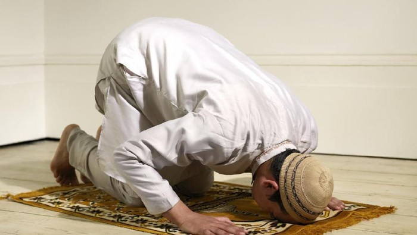

Tata Cara Syarat wajib dan Sah Sholat Subuh

Sholat Subuh merupakan sholat fardu yang hukumnya wajib. Oleh karena itu, umat muslim harus mengetahui tata cara melaksanakannya. Lantas, seperti apa tata cara sholat Subuh sendiri yang benar?/
Tata Cara Sholat Subuh Sendiri
- Berdiri tegak menghadap kiblat dan membaca niat
- Takbiratul ihram
- Membaca doa iftitah
- membaca surah Al-Fatihah
- Baca Surah Pendek Al-Qur'an
- Rukuk
- I'tidal
- Sujud
- Duduk Di antrara Dua Sujud
- Sujud Kedua
- Duduk Tasyahud
- Salam
Syarat Wajib Sholat
- Islam
- Baligh
- Berakal
Syarat Sah Sholat
- Suci badan dari hadas dan najis
- Menutup aurat dengan pakaian yang suci
- Berada di tempat yang suci
- Telah masuk waktu Sholat
- Menghadap kiblat